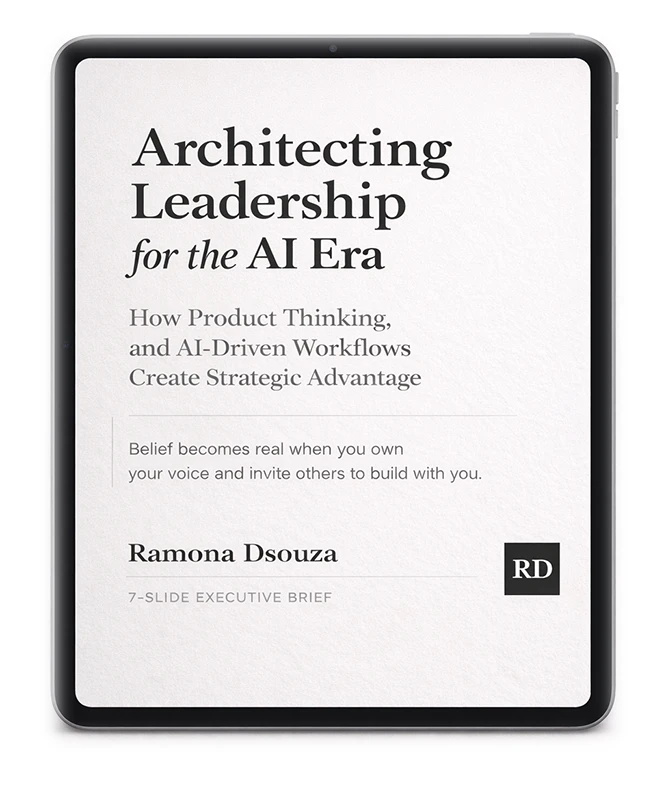

Back to Selected Work
/ Executive Brief | AI Product Leadership
AI Strategy Through Product & Design
An executive brief for leaders who need AI to move the business, not just the demo. It outlines the operating model, governance, and product strategy required to scale AI responsibly, clarifying decision rights, portfolio priorities, and measurable outcomes. Use it to align teams, de-risk adoption, and build systems that compound value.
Free Get the Executive Brief

Executive Outcomes
Operating Model Blueprint
Define decision rights, funding gates, and cross-functional roles so AI delivery scales without bottlenecks.
AI Governance and Risk
Set governance for data, model risk, and compliance while enabling faster, safer experimentation.
Strategy and Metrics
Connect AI initiatives to portfolio strategy, KPI design, and a repeatable value-realization system.